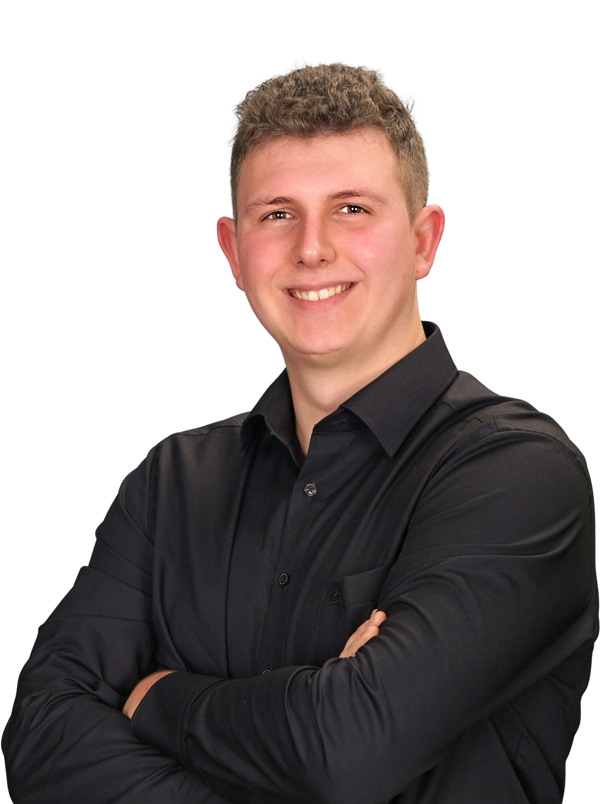

Marlon Scheer
CEO & Founder
Über mich & die M2 Cybersec
Schon früh war mir klar, dass Technik eine zentrale Rolle in meinem Leben spielen würde. Bereits während meiner Schulzeit faszinierte mich die Welt der IT, besonders die Sicherheitstechnologien, die digitale Systeme schützen.
Um meine Leidenschaft mit praktischer Erfahrung zu vertiefen, absolvierte ich während der Schulzeit mehrere Praktika im IT-Sicherheitsbereich. 2022 begann ich mein Studium „Cyber Security and Privacy" an der Hochschule Bonn-Rhein-Sieg.
Neben dem Studium arbeitete ich intensiv an privaten Software- und App-Entwicklungsprojekten und beschäftigte mich mit neuen Sicherheitskonzepten. Mein wissenschaftliches Interesse führte mich zu verschiedenen Forschungsthemen, darunter Detektion von Waldbränden mittels Sensordatenfusion und Wireguard im Vergleich zu anderen VPN-Protokollen.
Die Gründung der M2 Cybersec UG
2024 entschied ich mich, meine eigene Firma zu gründen – die M2 Cybersec UG. Mein Ziel war es, meine Kenntnisse nicht nur für persönliche Projekte zu nutzen, sondern Unternehmen dabei zu helfen, ihre IT-Sicherheit auf ein neues Level zu heben.
Meine Philosophie
Sicherheit ist keine einmalige Lösung, sondern ein kontinuierlicher Prozess. Mit einem tiefen Verständnis für Angriffsmethoden und Sicherheitsarchitekturen arbeite ich daran, maßgeschneiderte Lösungen zu entwickeln – individuell, effizient und mit höchstem Anspruch an Qualität.